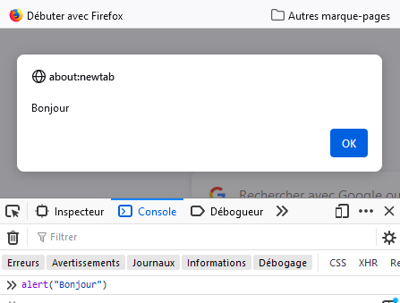

Cette leçon présente l'environnement de travail (l'ardoise JavaScript de Firefox) et développe les tout premiers concepts du langage
Comprendre l'environnement de travail, apprendre quelques éléments de base du langage
Firefox propose une ardoise JavaScript appelée Scratchpad. Pour l'activer, aller dans le menu en haut à droite, puis dans Developpeur, et enfin Scratchpad, ou plus simplement faites shift-F4 sur votre clavier ! Une fois l'ardoise ouverte, vous pouvez taper du code JavaScript dedans, l'exécuter et voir le résultat. Par exemple, taper la ligne suivante :
Cliquez ensuite sur Run et vous verrez apparaitre une fenêtre avec le texte Bonjour dedans qui doit ressembler à ça

La fonction alert() permet d'ouvrir une fenêtre avec un message dedans, et bloque tout autre évaluation tant que l'utilisateur n'a pas cliqué sur OK. On va se servir de cette fonction tout au long des leçons pour pouvoir afficher une valeur depuis un programme JavaScript.
Il est possible de sauvegarder le contenu de l'ardoise dans un fichier puis de charger le contenu du fichier dans l'ardoise ultérieurement. L'alternative est de créer un fichier JavaScript avec votre éditeur favori, puis de charger ensuite le fichier dans l'ardoise.
JavaScript sait manipuler des valeurs élémentaires comme les nombres et les chaines de caractères. Par manipuler on veut dire calculer avec, comme par exemple combiner des nombres avec des opérations pour calculer d'autres nombres. Par exemple, exécutez ce code dans Scratchpad :
et vous verrez apparaitre une fenêtre avec le nombre 21 à l'intérieur. JavaScript calcule (on dit évalue) toutes les expressions qu'il rencontre. On peut fabriquer des expressions mathématiques de taille quelconque en combinant des nombres et des opérateurs, et onpeut utiliser des paranthèses (les caractères '(' et ')' ) pour résoudre les problèmes de précédence. Par exemple, exécutez ce code dans Scratchpad :
et comparez le résultat avec le code précédent !
Exécutez maintenant ce code dans Scratchpad :
et vous verrez apparaitre une fenêtre avec la chaîne de caractères 5 * 6 - 18 / 2 à l'intérieur. Une chaîne de caractères est délimitée par une paires de double-quote (le caractère "). La valeur d'une chaîne de caractères est la chaÎne elle-même, un peu comme la valeur d'un nombre est le nombre lui-même.
JavaScript connait un grand nombre d'opérations de base. Par exemple, tous les opérateurs arithmétiques sont disponibles en JavaScript (+, -, *, /, etc.). Sur les chaînes de caractères, on dispose aussi d'un grand nombre de fonctions et d'opérateurs. Pour l'instant, on s'intéresse à l'opérateur + qui permet de fabriquer une nouvelle chaîne en concaténant deux chaînes existantes. Cet opérateur a le même nom que l'addition entre les nombres bien que ce soit un opérateur différent. JavaScript fait la différence en fonction du contexte. Par exemple, exécutez le code suivant :